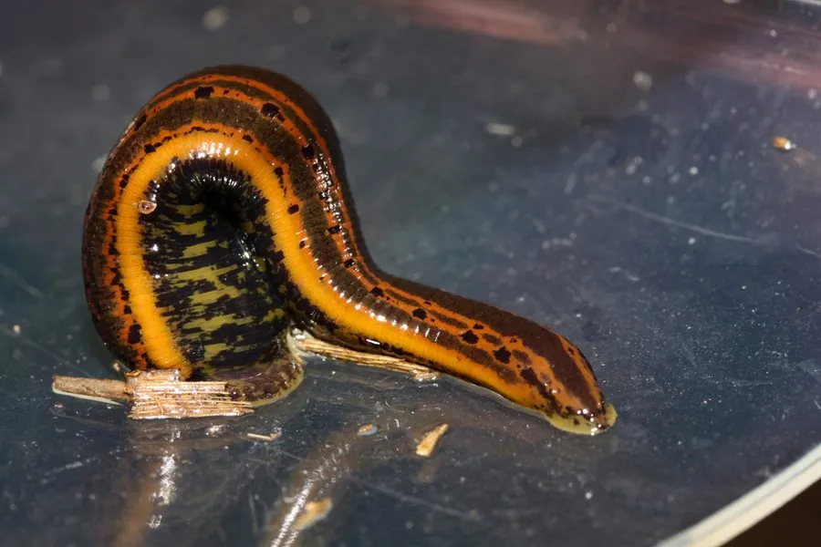

其他无脊椎动物 · 动物界
医蛭 Hirudo medicinalis

曾在欧洲长期用于放血疗法的吸血蛭，唾液含抗凝血物质，如今仍在显微外科和整形手术中应用，医学价值独特。
- 分类
- 门环节动物门纲环带纲目无吻蛭目科医蛭科属医蛭属
- 栖息环境
- 淡水池塘、沼泽和缓流，多在浅水泥底活动
- 地理分布
- 欧洲大部分地区，历史上曾被引种至其他地区
- 保护级别
- 暂无评估；因过度采集和湿地减少，欧洲野生种群下降
物种志
医蛭体长 8–15 cm，伸展时可达 20 cm，体背绿褐色，带橙黄色纵纹和黑斑，腹面暗绿色。身体扁平，前后各有一个吸盘，前吸盘中央是口，口内有 3 枚颚，每枚颚上排列着细齿，咬出的伤口呈 Y 字形。
它生活在淡水池塘、沼泽和缓流中，靠吸食哺乳动物等温血动物的血液为生，一次吸血后可数月不进食。医蛭寻找宿主依靠感知温度、化学物质和水体振动。它的唾液含抗凝血的水蛭素、麻醉物质和血管扩张物质，使伤口持续流血却不感到疼痛。医蛭雌雄同体，异体受精，在潮湿土壤中产卵茧。水蛭素已启发了多种抗凝药物，活体医蛭至今仍用于断指再植和皮瓣移植术后的淤血处理。它分布于欧洲，因过度采集和湿地减少，野生种群已明显下降。
形态与习性
- 食性吸食哺乳动物等温血动物的血液
- 体长约 8–15 cm，伸展开可达 20 cm
- 耐饥一次吸血后可数月不进食
- 唾液含水蛭素等抗凝血物质，使伤口持续流血
- 繁殖雌雄同体，异体受精，产卵茧于湿土中
- 应用水蛭素与活体医蛭用于显微外科
趣味知识
- 医蛭咬人时不痛，因为唾液里有麻醉成分，伤口还会持续流血。
- 水蛭素是源于医蛭的抗凝血物质，启发了多种抗凝药物。
- 欧洲曾用医蛭做放血疗法，19 世纪需求量巨大导致野生种群锐减。